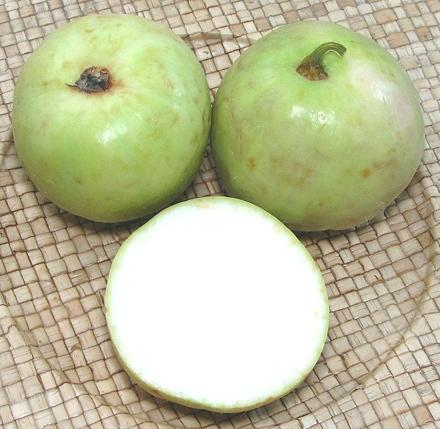

Tinda

[Indian round gourd, apple gourd, Indian baby pumpkin; Tindsi (Rajasthan);
Dhemase (Marathi); Dilpasand (Hindi); Meha (Sindhi); Praecitrullus
fistulosus alt Citrullus fistulosus]
Native to India, this gourd is popular in the cuisines of Northern India
and Pakistan. The gourd is most often eaten in an immature stage when it
will be tender and needs neither peeling nor seeding. More mature tinda
will have a tough skin and hard seeds, both of which need to be removed.
Seeds of fully mature gourds are eaten. The largest of the photo
specimens was 3.3 inches diameter and weighed 8-3/8 ounces.
Tinda is considered a very beneficial vegetable, especially for various
digestive issues. It is often considered a bit uninteresting, so is
usually included in dishes that are fairly highly spiced. In India,
Tinda is reputed to be absolutely hated by children, but loved by them
when they become adults.
More on Gourds.
Buying:
This gourd is becoming more common in Southern
California when it is in season. When in seasons, it can be found in
markets serving a significant Indian / Pakistani community. The photo
specimens were bought in early July from a large multi-ethnic market in
Los Angeles (Sunland) for 2019 US $1.39 / pound.
Subst:
The taste and cooking properties of Bottle Gourd
(Opo) are very similar. These are larger and usually need to be peeled.
The seeds are larger but tender if the gourd is as young as it should
be. Opo will cook in a shorter time than Tinda.
Prep:
As sold here in Southern California, these usually
need only be cut to size, discarding just a little at the flower and
stem ends. They need not be peeled - the peel will be noticeable but
not annoying. If in doubt, you can use a vegetable peeler to remove
the minimum thickness of skin. If you find hard white or black seeds,
they must be scraped out. Gourds that mature probably should be peeled
as well.
Cooking:
The raw flesh of this gourd is rather hard,
and it takes longer cooking than most gourds do - simmering for 45
to 55 minutes.
gd_tindaz 190707 - www.clovegarden.com
©Andrew Grygus - agryg@clovegaden.com - Photos on this
page not otherwise credited are © cg1 -
Linking to and non-commercial use of this page permitted